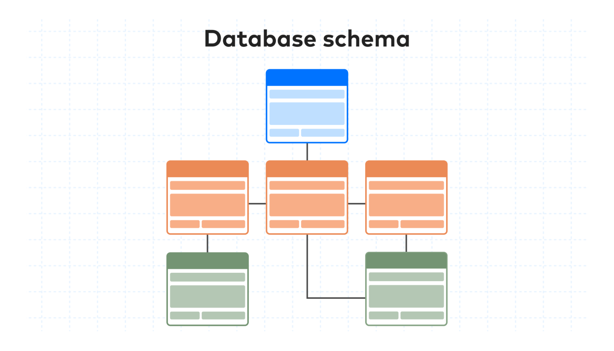

Getting Started with SQL and Databases
What is Data?
- Facts in words and numbers
- Pictures
- One of the most critical assets of any business
- Need to be secure
What is Database?
- A database is a collection of data for information designed for input, storage search, retrieval and modification of data.
What is DBMS?
- DBMS stands for Database Management System.
- DBMS is the set of programs that creates and maintains the database.
- DBMS allows you to store, modify and extract information from a database by querying.
Types of Databases
- Relational Databases
- Relational Databases also referred as RDBMS.
- Data is organized into a tabular format with rows and columns.
- Well-defined structure and schema.
- Optimized for data operations and querying.
- Use SQL as the standard querying language.
- Examples: MySQL, PostgreSQL, Oracle Database, Microsoft SQL Server, IBM DB2.
- Non-Relational Databases
- Non-Relational Databases also referred as NoSQL.
- Data is stored in a schema-less or free-form fashion.
- There are four common types of NoSQL Databases:
- Key-Value Store - Examples: Redis, memcached and DynamoDB.
- Document Based - Examples: MongoDB, DocumentDB, CouchDB and Cloudant.
- Colum Based - Examples: Cassandra and Apache Hbase
- Graph Based - Examples: Neo4J and CosmosDB.
Database Schema
A database schema defines how data is organized within a relational database; this is inclusive of logical constraints such as, table names, fields, data types, and the relationships between these entities. Schemas commonly use visual representations to communicate the architecture of the database.

SQL
SQL stands for Structured Query Language
SQL is a standard language for storing, manipulating and retrieving data in databases.
Using SQL you can perform :
- Retrieve data from a database
- Insert records in a database
- Update records in a database
- Delete records in a database
- Create new databases
- Create new tables in a database
Syntax
Most of the actions you need to perform on a database are done with SQL statements.
SQL statements consists of keywords that are easy to understand.
SELECT * FROM Students;
SQL keywords are NOT case sensitive: select is the same as SELECT
Some database systems require a semicolon at the end of each SQL statement.
Semicolon is the standard way to separate each SQL statement in database systems that allow more than one SQL statement to be executed in the same call to the server.
Important SQL Commands
- SELECT: extracts data from a database
- UPDATE: updates data in a database
- DELETE: deletes data from a database
- INSERT INTO: inserts new data into a database
- CREATE DATABASE: creates a new database
- ALTER DATABASE: modifies a database
- CREATE TABLE: creates a new table
- ALTER TABLE: modifies a table
- DROP TABLE: deletes a table